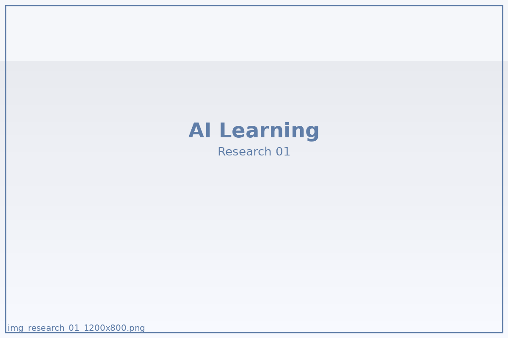

観測メモの編集設計
場面ごとのメモを集め、読み返しやすい単位へ編集し直します。
記録した本人があとから読み返し、別の場面へ持ち出せる設計を重視しています。
学習の変化を観察し、編み直すためのフレームをご紹介します。

場面ごとのメモを集め、読み返しやすい単位へ編集し直します。
記録した本人があとから読み返し、別の場面へ持ち出せる設計を重視しています。
気になる用語を検索してください。後半で検索ワードが意味を持ちます。
以下のカードをタップすると、裏側の補助ラベルが表示されます。
人や情報をつなげて場を前へ進めるための感覚。
同じ要素を別の角度から見た補助ラベル。
選択肢の並び替えを通して道筋を見つける感覚。
同じ要素を別の角度から見た補助ラベル。
考えを小さく実行へ移し、流れを作るための感覚。
同じ要素を別の角度から見た補助ラベル。
既存の見方を言い換え、別の形で置き直す発想。
同じ要素を別の角度から見た補助ラベル。
迷いから行動へ移るための切り替え速度。
同じ要素を別の角度から見た補助ラベル。